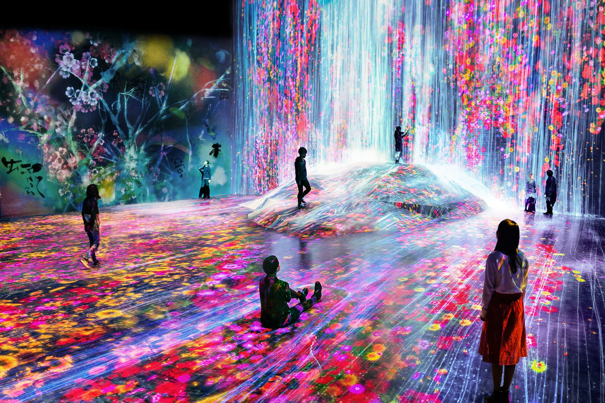

Tokyo Tower
Ein ikonischer Aussichtsturm mit einer atemberaubenden Aussicht über die Stadt.

Tickets kaufen: Tickets
Senso-ji-Tempel
Der älteste Tempel Tokios, ein Muss für jeden Besucher.

Kostenloser Eintritt
Tokyo Skytree
Der höchste Turm Japans mit einer beeindruckenden Aussichtsplattform und Einkaufszentrum.

Tickets kaufen: Tickets
TeamLab Planets Tokyo
Ein immersives Kunstmuseum, bei dem Besucher durch Wasser, Licht und Raum laufen.
Tickets kaufen: Tickets
Ueno Zoo
Der älteste Zoo Japans mit Pandas, Tigern und einem riesigen Park drumherum.
Tickets kaufen: Tickets
Sumida Aquarium
Modernes Aquarium im Tokyo Skytree Town mit Quallen, Pinguinen und Design-Becken.
Tickets kaufen: Tickets
Shibuya Sky
Eine der neuesten Aussichtsplattformen über Tokios berühmtestem Kreuzungsviertel.
Tickets kaufen: Tickets
Tokyo Disneyland
Ein magischer Freizeitpark mit klassischen Disney-Attraktionen und japanischer Gastfreundschaft.

Tickets kaufen: Tickets
Sunshine Aquarium
Ein Aquarium auf einem Hochhausdach mit Blick über Tokio – ideal bei schlechtem Wetter.
Tickets kaufen: Tickets
Edo-Tokyo Museum
Ein Museum zur Geschichte Tokios von der Edo-Zeit bis heute mit tollen Nachbauten & Ausstellungen.
Tickets kaufen: Tickets
Tokyo Dome City
Ein Erlebnisviertel mit Achterbahnen, Riesenrad, Shops, Restaurants und Onsen-Bad.
Tickets kaufen: Tickets